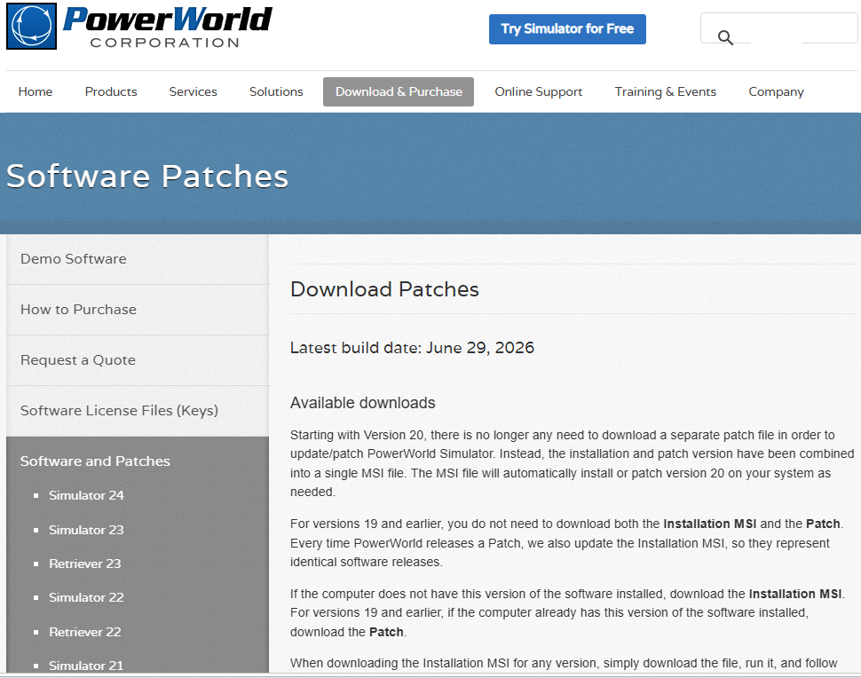
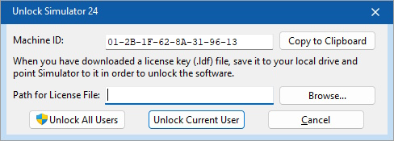
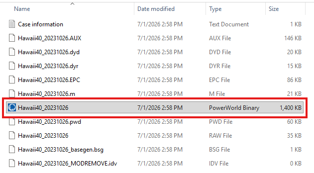
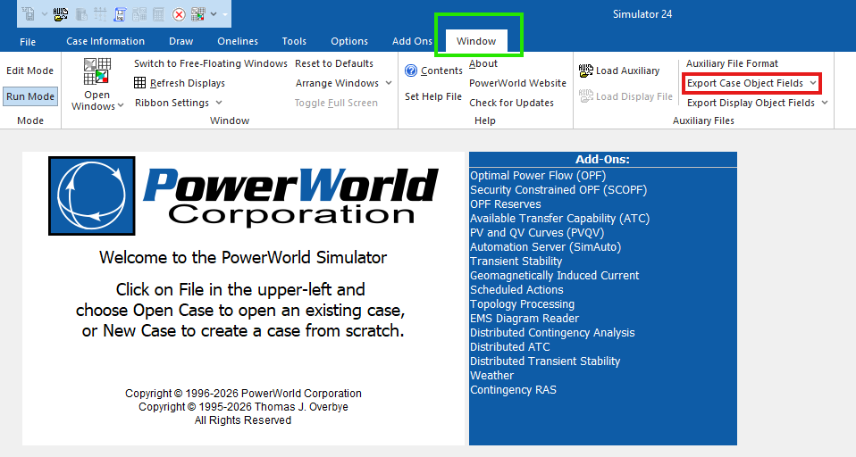
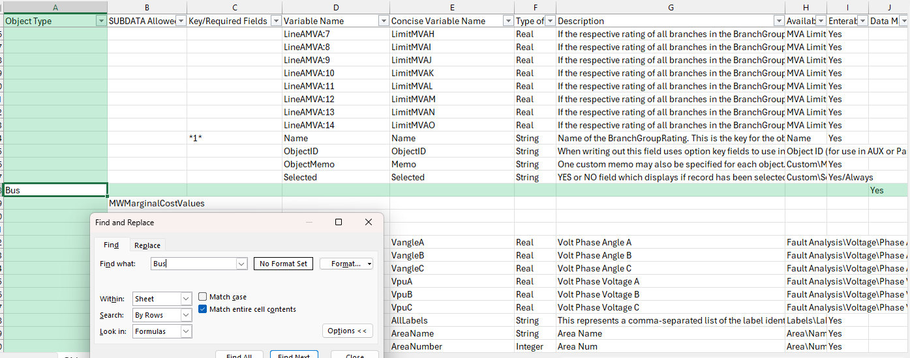
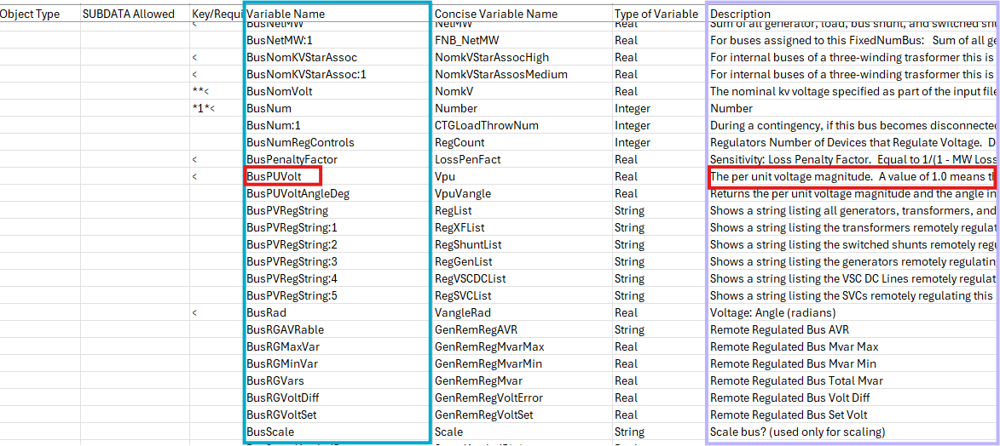
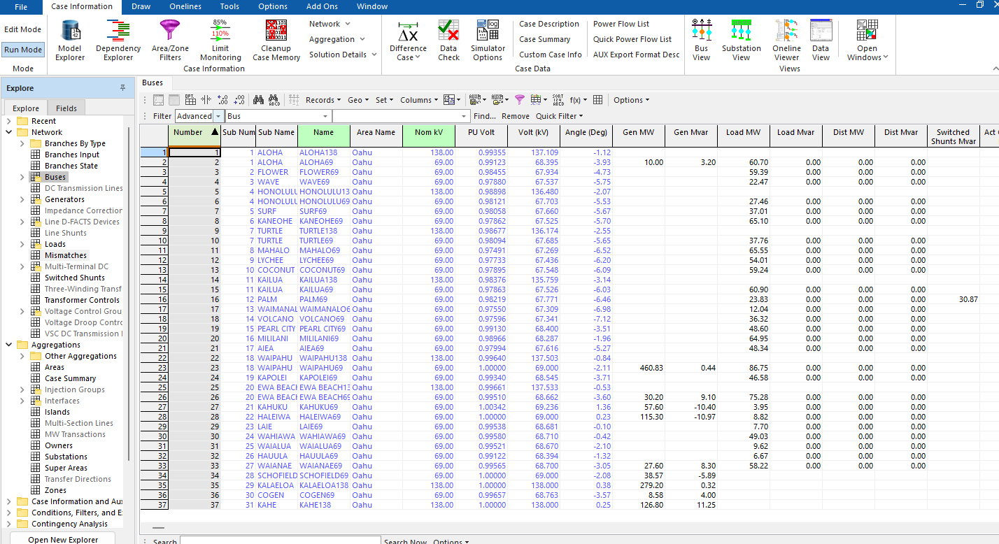

PowerWorld Simulator
Much of the Birchfield Research Group’s research relies on PowerWorld Simulator, a software package used to model and simulate electric power systems.
Although PowerWorld includes a graphical user interface (GUI), much of our work is performed through Python automation of PowerWorld. To automate simulations and analyses, we typically use one of the following packages:
Both packages provide a Python interface to PowerWorld.
Note
At the time this guide was written, PowerWorld does not run on macOS. A Windows machine is required to run PowerWorld. 😢
Installing and Unlocking PowerWorld
The first step is to install PowerWorld Simulator.
Go to the PowerWorld Download Page.
Open the PowerWorld Credentials Folder in the group’s shared Google Drive.
Open
Notes.txtand locate the PowerWorld download credentials.Enter the username and password from
Notes.txton the PowerWorld download page.Enter your name and email address, then click Submit.
The webpage should look similar to the image below:

After signing in, scroll down to the downloads section.
Look for the most recent entry labeled:
Version XX Installation/Patch MSI
where XX is the latest available version number.
Download the installer, then open it from your Downloads folder. The installer name will typically look something like:
pw24FullSimulatorSetup
Accept the license agreement and proceed through the installation wizard. Once installation is complete, click Finish.
Note
Installing PowerWorld does not automatically activate the license. The software must still be unlocked before it can be used.
Unlocking PowerWorld
After installation, open PowerWorld Simulator.
You will likely receive a message indicating that the software is locked. To obtain a license key:
Visit the PowerWorld Software Keys Page.
Sign in using the same username and password used to download PowerWorld.
In PowerWorld, locate the Machine ID field shown below:

Click Copy to Clipboard to copy the Machine ID.
Paste the Machine ID into the Machine/Lock Code field on the Software Keys webpage.
Complete the remaining requested information and click Submit.
Do not click Postpone Upgrade.
Download the generated software key.
Return to the PowerWorld window, click Browse, and select the software key that was just downloaded.
If available, click Unlock All Users.
PowerWorld should now be unlocked and ready to use.
Easy Sim Auto (ESA)
Now that PowerWorld is installed and unlocked, we can begin using ESA.
Easy Sim Auto (ESA) is a Python package that provides a convenient interface to PowerWorld Simulator. Many research projects in the Birchfield Research Group use ESA to automate simulations, retrieve data, and perform large numbers of studies efficiently.
Compared to PowerWorld’s traditional SimAuto interface, ESA is generally easier to learn and use.
Downloading a Case
Before using ESA, you will need a PowerWorld case.
For this guide, we will use the Hawaii Synthetic Case from the Texas A&M Electric Grid Test Case Repository.
After downloading the ZIP file and extracting it, you will see many files.
For now, the only file we need is the PowerWorld case file, which has a
.PWB (or .pwb) extension.
An example is shown below, with the PowerWorld case highlighted in red:
{kind=link}

The remaining files can be ignored for now. Most are not PowerWorld case files and are not needed for the examples in this guide.
We recommend creating a dedicated folder to store PowerWorld cases and moving
the .pwb file there.
Comprehensive ESA Quickstart Guide
The official ESA Quick Start Guide provides a good introduction to ESA and is still recommended reading.
However, the tutorial leaves out several details that are important for first-time users. This section is intended to supplement the official guide by providing additional explanation and context where needed.
Installing ESA
Open a Python IDE such as PyCharm or VS Code.
Next, install ESA:
python -m pip install ESA
ESA also requires the Numba package:
python -m pip install numba
Note
Numba is a separate package from NumPy. Be careful not to confuse the two.
Opening a PowerWorld Case
Create a new Python script and import the SimAuto Wrapper (SAW) class:
from esa import SAW
Next, create a variable that stores the path to your PowerWorld case:
case_path = r"C:\Users\joshua_x\Documents\Research\Cases\Hawaii40_20231026.pwb"
The exact file path will depend on where you stored the case on your computer.
To open the case, initialize a SAW object:
saw = SAW(case_path)
Once this line executes successfully, ESA will launch PowerWorld in the background and open the specified case.
Reading Bus Data
Now that the case is open, let’s retrieve some information from it.
In this example, we will retrieve:
Bus numbers
Per-unit bus voltages
Bus voltage angles (radians)
Object Types
Before retrieving data, we must understand how ESA identifies different types of grid components.
In PowerWorld, each type of object has an associated object name. Examples of grid components include buses, generators, transmission lines, loads, and substations. When retrieving data through ESA, we must specify the corresponding PowerWorld object name.
For most situations, the table below contains the object names you will need:
Grid Component |
PowerWorld Name |
|---|---|
Bus |
Bus |
Generator |
Gen |
Branch (transmission line/transformer) |
Branch |
Load |
Load |
Substation |
Substation |
The table above is sufficient for many common tasks. However, PowerWorld contains many additional object types.
To view the complete list of PowerWorld object names, open PowerWorld and navigate to the Window tab, highlighted in green below:
{kind=link}

Under Export Case Object Fields, highlighted in red, select Send to Excel.
PowerWorld will open an Excel spreadsheet containing information about all available object types and their associated fields.
The Object Type column contains the PowerWorld names used when interacting with ESA. For example, the object name for buses is Bus, as shown below:
{kind=link}

Key Fields
Once we know an object’s PowerWorld name, the next step is to determine its key fields.
A key field uniquely identifies a specific object within the power system. For example, a bus is uniquely identified by its bus number.
The following command retrieves the key fields associated with buses:
bus_key_fields = saw.get_key_field_list("Bus")
For buses, the returned key field is:
["BusNum"]
Notice that the field is called BusNum, not Bus or BusNumber.
This naming convention is specific to PowerWorld and may not always be obvious,
which is why it is useful to retrieve the key fields programmatically instead
of guessing their names.
Note
PowerWorld object names are not case-sensitive when used with
get_key_field_list(). For example, "Bus", "bus", and
"BUS" will produce the same result.
Save the Excel spreadsheet for future reference.
It contains all PowerWorld object types, key fields, and variable names, making it one of the most useful references when working with ESA. Whenever you are unsure of a PowerWorld name, consult this spreadsheet first.
Variable Names
Now that we know how to identify buses, we can request additional information about them.
In this example, we would like to retrieve:
Per-unit bus voltage
Bus voltage angle (radians)
Just as PowerWorld assigns names to object types, it also assigns names to fields associated with those objects. These names are required whenever data is retrieved through ESA.
To find a field’s PowerWorld name, return to the same Excel spreadsheet that was generated using Export Case Object Fields.
In the spreadsheet:
The Variable Name column contains the PowerWorld field names.
The Description column explains what each field represents.
An example is shown below:
{kind=link}

For this example, the PowerWorld name for per-unit bus voltage is
BusPUVolt. This field is highlighted in red in the image above.
To obtain bus voltage angle in radians, locate the corresponding description
in the Description column. The associated PowerWorld field name is
BusRad.
As with object types and key fields, these names are not always obvious. Whenever you need to retrieve data from PowerWorld, it is generally best to consult the spreadsheet instead of guessing the field name.
Retrieving Data
We can now retrieve the bus data from PowerWorld.
First, specify the additional fields we would like to retrieve:
additional_bus_fields = ["BusPUVolt", "BusRad"]
Next, combine these fields with the key fields:
bus_fields = bus_key_fields + additional_bus_fields
Finally, retrieve the data from PowerWorld:
df_bus = saw.GetParametersMultipleElement("Bus", bus_fields)
The returned object is a Pandas DataFrame containing one row for each bus and one column for each requested field.
To work with the data more easily, we can convert the DataFrame columns into Python lists:
bus_nums = df_bus["BusNum"].tolist()
bus_vpus = df_bus["BusPUVolt"].tolist()
bus_angle_rads = df_bus["BusRad"].tolist()
Verifying Results
As a quick sanity check, we can print a few of the retrieved values:
bus number = 1, per-unit voltage = 0.9935, voltage angle degrees = -1.12
bus number = 2, per-unit voltage = 0.9912, voltage angle degrees = -3.93
bus number = 3, per-unit voltage = 0.9845, voltage angle degrees = -4.73
bus number = 4, per-unit voltage = 0.9788, voltage angle degrees = -5.75
bus number = 5, per-unit voltage = 0.9890, voltage angle degrees = -2.07
bus number = 6, per-unit voltage = 0.9812, voltage angle degrees = -5.53
bus number = 7, per-unit voltage = 0.9806, voltage angle degrees = -5.67
bus number = 8, per-unit voltage = 0.9786, voltage angle degrees = -5.70
bus number = 9, per-unit voltage = 0.9868, voltage angle degrees = -2.55
bus number = 10, per-unit voltage = 0.9809, voltage angle degrees = -5.65
To verify that ESA is returning the correct information, compare the results against the values shown directly in the PowerWorld GUI.
The image below shows the same bus voltage magnitudes and voltage angles displayed within PowerWorld:
{kind=link}

Notice that the values reported by ESA match those shown in PowerWorld.
This comparison provides confidence that we are retrieving the desired fields correctly and interpreting them as intended.